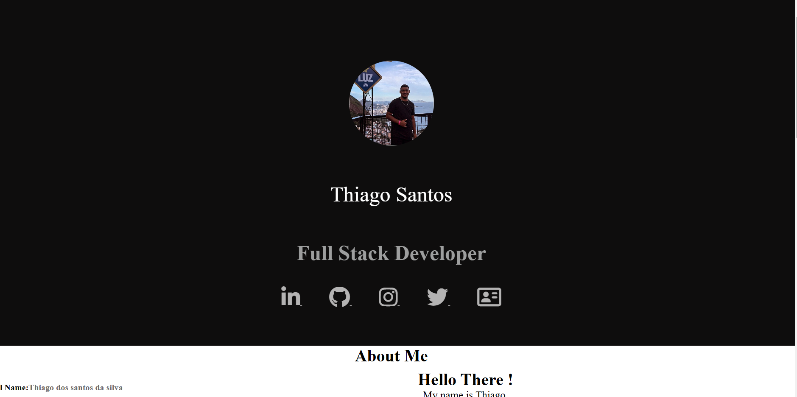
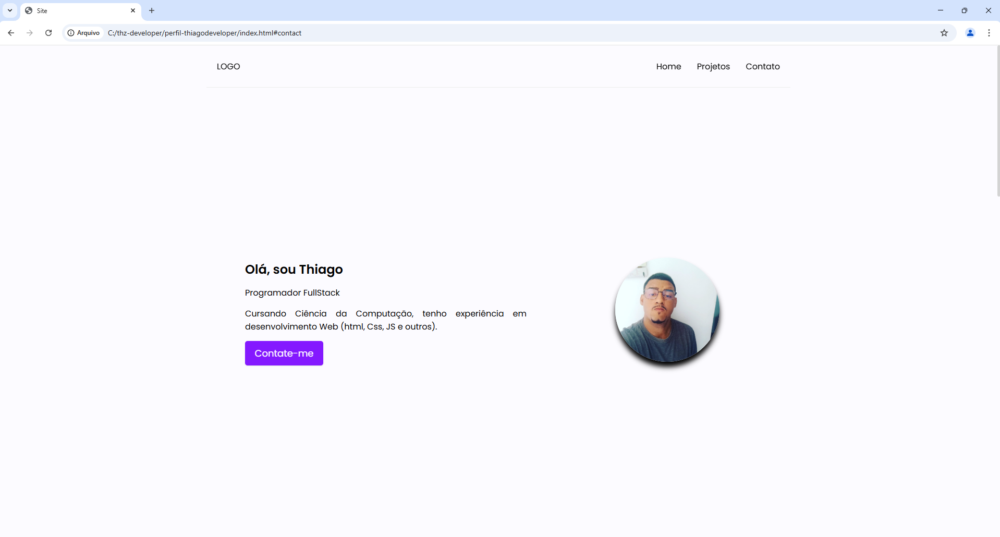
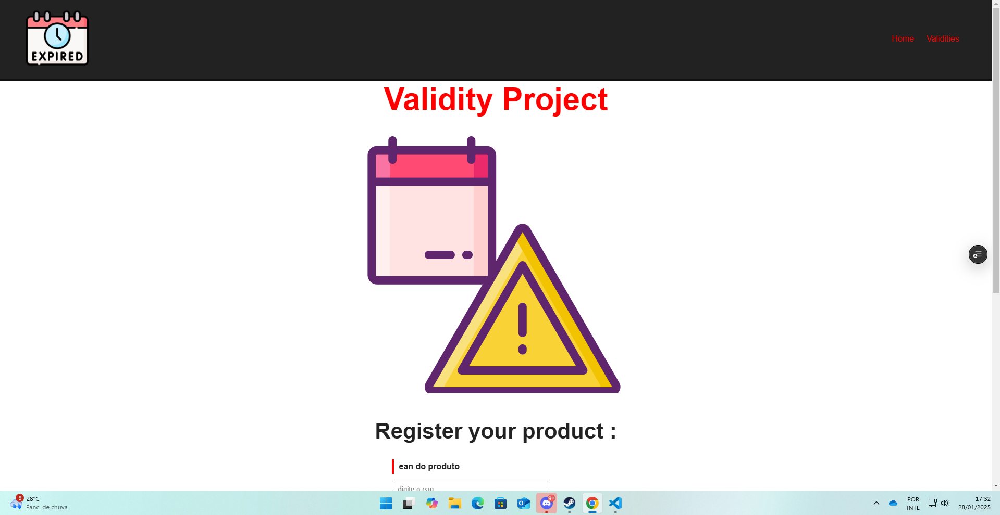

Programador FullStack
Cursando Ciência da Computação,
tenho experiência em desenvolvimento Web
(html, Css, JS e outros) E Atendimento e resolução de chamados de suporte N1 e N2,Instalação e configuração de sistemas operacionais, como Windows e Linux.
Projetos

WebSites Modernos
Criação de websites modernos responsivos para qualquer dispositivo.

WebSites Modernos
Criação de websites modernos responsivos para qualquer dispositivo.

Sistemas completos
Criação de sistemas completos desde o back-end até o front-end.
Experiência
Estagiário de TI - 𝗣𝗮𝗿𝘁𝗮𝗴𝗲 𝗦𝗵𝗼𝗽𝗽𝗶𝗻g São Gonçalo
- Atendimento e resolução de chamados de suporte N1 e N2, utilizando o sistema de Service Desk Milvus, garantindo agilidade nas respostas e na resolução de problemas.
- Instalação e configuração de sistemas operacionais, como Windows e Linux, além de softwares de produtividade, como Microsoft 365 e Google Workspace, e ferramentas de segurança.
- Assistência na gestão de redes e infraestrutura de TI, com foco em configuração e suporte de roteadores, switches, VPNs e gerenciamento de endereçamento IP.
- Configuração e suporte a impressoras (incluindo modelos de rede e dispositivos multifuncionais) e dispositivos móveis com Android e iOS, garantindo total integração e acessibilidade para os usuários.
- Documentação de procedimentos e soluções técnicas, com o objetivo de manter um controle preciso das ações realizadas e facilitar a resolução de futuros problemas.